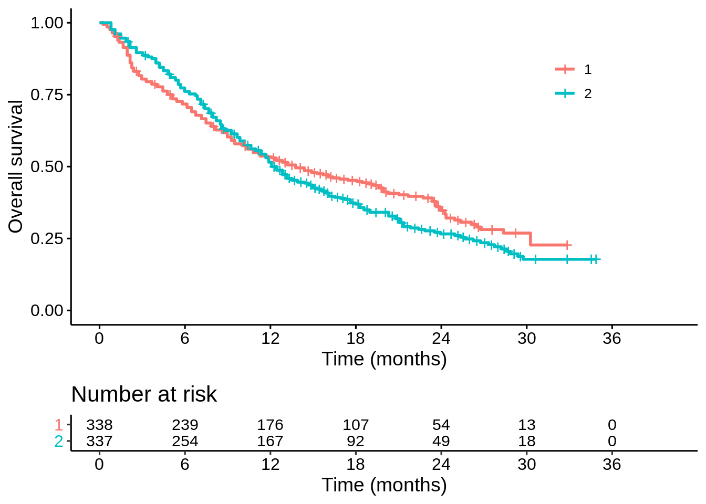

A Bayesian approach to non-proportional hazards
In this blogpost I wanted to explore a Bayesian approach to non-proportional hazards. Take this data set as an example (the data is here).
library(tidyverse)
library(survival)
library(brms)
##########################
dat <- read_csv("IPD_both.csv") %>%
mutate(arm = factor(arm))
km_est<-survfit(Surv(time,event)~arm, data=dat)
p1 <- survminer::ggsurvplot(km_est,
data = dat,
risk.table = TRUE,
break.x.by = 6,
legend.labs = c("1", "2"),
legend.title = "",
xlab = "Time (months)",
ylab = "Overall survival",
risk.table.fontsize = 4,
legend = c(0.8,0.8))
p1
It looks like there is a trade-off between short-term survival and long-term survival on the two treatments. But is the apparent long term benefit real? How sure are we? That is my main question of interest here: does treatment “1” improve long term survival?
Probably the best tool for flexible parametric Bayesian survival analysis is now the rstanarm package (https://arxiv.org/abs/2002.09633). This looks awesome. Unfortunately, I only have access to my work computer at the moment which doesn’t have the latest version installed. Instead I’ll be using the brms package – which is also excellent.
Before I can fit a piece-wise exponential model (with changepoints every 6 months), I need to use a little trick (the survSplit function) to change my covariates into time-dependent ones – this kind of thing is explained here.
## change into time-dependent data set
dat_td <- survSplit(Surv(time, event) ~ arm,
data = dat,
cut = c(6,12,18,24),
episode = "period") %>%
mutate(censored = as.numeric(!event),
period = factor(period))
## fit Bayesian model
fit1 <- brm(formula = time | cens(censored) + trunc(lb = tstart) ~ arm * period,
data = dat_td,
family = exponential(),
inits = "0",
refresh = 0,
seed = 593)
summary(fit1)## Family: exponential
## Links: mu = log
## Formula: time | cens(censored) + trunc(lb = tstart) ~ arm * period
## Data: dat_td (Number of observations: 1813)
## Samples: 4 chains, each with iter = 2000; warmup = 1000; thin = 1;
## total post-warmup samples = 4000
##
## Population-Level Effects:
## Estimate Est.Error l-95% CI u-95% CI Rhat Bulk_ESS Tail_ESS
## Intercept 2.89 0.10 2.69 3.10 1.00 3215 3119
## arm2 0.23 0.15 -0.07 0.53 1.00 2954 3237
## period2 0.11 0.16 -0.20 0.43 1.00 2821 2525
## period3 0.68 0.23 0.24 1.14 1.00 3194 2944
## period4 0.34 0.25 -0.15 0.85 1.00 3074 2596
## period5 0.06 0.32 -0.52 0.72 1.00 3176 2579
## arm2:period2 -0.48 0.23 -0.93 -0.04 1.00 2729 2777
## arm2:period3 -0.92 0.30 -1.53 -0.33 1.00 2949 3065
## arm2:period4 -0.54 0.35 -1.22 0.14 1.00 2968 2572
## arm2:period5 -0.08 0.44 -0.95 0.80 1.00 3404 2814
##
## Samples were drawn using sampling(NUTS). For each parameter, Eff.Sample
## is a crude measure of effective sample size, and Rhat is the potential
## scale reduction factor on split chains (at convergence, Rhat = 1).To explain where these parameters fit in mathematically, the probability of surviving to time \(t\) on arm \(j=1,2\) is…
\[\begin{split} S_j(t) = & \exp\left(\frac{-t}{\exp(\mu_{j,1})}\right), & ~~t \leq 6 \\ = & \exp\left(\frac{-6}{\exp(\mu_{j,1})}\right)\exp\left(\frac{-(t-6)}{\exp(\mu_{j,2})}\right), &~~ 6 < t \leq 12 \\ =& \exp\left(\frac{-6}{\exp(\mu_{j,1})}\right)\exp\left(\frac{-(12-6)}{\exp(\mu_{j,2})}\right)\exp\left(\frac{-(t-12)}{\exp(\mu_{j,3})}\right), & ~~12 < t \leq 18 \\ = &...& \end{split}\]
where
\[\begin{split} \mu_{1,1} = & \text{Intercept}\\ \mu_{1,2} = & \text{Intercept} + \text{period2}\\ \mu_{1,3} = & \text{Intercept} + \text{period3}\\ ... & \end{split}\]
and
\[\begin{split} \mu_{2,1} = & \text{Intercept} + \text{arm2}\\ \mu_{2,2} = & \text{Intercept} + \text{arm2} + \text{period2} + \text{arm2:period2}\\ \mu_{2,3} = & \text{Intercept} + \text{arm2} + \text{period3} + \text{arm2:period3}\\ ... & \end{split}\]
To generate posterior samples of these survival probabilities, I need to take the posterior samples of the model parameters, and then perform these transformations. Apologies for the ugly piece of code here.
## function to turn posterior samples
## of model parameters ("ps = posterior_samples(fit1)")
## into posterior samples of S(t)
get_s <- function(t, ps, arm = "1", changepoints = c(6,12,18,24)){
### Extract the scale parameters from posterior samples:
log_scales_1 <- matrix(NA,
nrow = length(ps[[1]]),
ncol = length(changepoints) + 1)
log_scales_2 <- matrix(NA,
nrow = length(ps[[1]]),
ncol = length(changepoints) + 1)
log_scales_1[,1] <- ps$b_Intercept
log_scales_2[,1] <- ps$b_Intercept + ps$b_arm2
for (i in (1 + seq_along(changepoints))){
log_scales_1[,i] <- ps$b_Intercept + ps[[paste0("b_period",i)]]
log_scales_2[,i] <- ps$b_Intercept + ps[[paste0("b_period",i)]] +
ps$b_arm2 + ps[[paste0("b_arm2:period",i)]]
}
scales_1 <- exp(log_scales_1)
scales_2 <- exp(log_scales_2)
### Piece-wise exponential survival function:
changepoints_Inf <- c(changepoints, Inf)
if(arm == 1){
p <- exp(-min(t, changepoints[1]) / scales_1[,1])
for (i in which(changepoints < t)){
p <- p * exp(-(min(t, changepoints_Inf[i + 1]) - changepoints[i]) / scales_1[,i + 1])
}
return(p)
}
else {
p <- exp(-min(t, changepoints[1]) / scales_2[,1])
for (i in which(changepoints < t)){
p <- p * exp(-(min(t, changepoints_Inf[i + 1]) - changepoints[i]) / scales_2[,i + 1])
}
return(p)
}
}For example, I can take the posterior samples for the survival probabilities at each month, calculate the posterior means, and see how well this matches the K-M plot:
ps <- posterior_samples(fit1)
t_seq <- seq(0, 36, 1)
s_1 <- purrr::map(t_seq, get_s, ps = ps)
s_2 <- purrr::map(t_seq, get_s, ps = ps, arm = "2")
df_sims <- data.frame(time = t_seq,
mean_1 = purrr::map_dbl(s_1, mean),
mean_2 = purrr::map_dbl(s_2, mean))
p1$plot +
geom_line(data = df_sims,
mapping = aes(x = time, y = mean_1), colour = "red") +
geom_line(data = df_sims,
mapping = aes(x = time, y = mean_2), colour = "blue")Now suppose I’m interested in the difference in survival probabilities at 24 months, \(S_1(24) - S_2(24)\). I can make a 95% credible interval:
diff_24 <- get_s(24, ps) - get_s(24, ps, arm = "2")
quantile(diff_24, probs = c(0.025, 0.975)) %>% round(2)## 2.5% 97.5%
## 0.01 0.16But I hadn’t pre-specified 24 months. I might just as well have been interested in the difference at 12,18 or 30 months:
diff_12 <- get_s(12, ps) - get_s(12, ps, arm = "2")
quantile(diff_12, probs = c(0.025, 0.975)) %>% round(2)## 2.5% 97.5%
## -0.07 0.08diff_18 <- get_s(18, ps) - get_s(18, ps, arm = "2")
quantile(diff_18, probs = c(0.025, 0.975)) %>% round(2)## 2.5% 97.5%
## 0.00 0.15diff_30 <- get_s(30, ps) - get_s(30, ps, arm = "2")
quantile(diff_30, probs = c(0.025, 0.975)) %>% round(2)## 2.5% 97.5%
## -0.03 0.13How should we interpret these 95% credible intervals, where 2 out of 4 just about exclude 0? Borderline convincing? But hang on… when I view \((-0.07,0.08)\times (0,0.15)\times (0.01,0.16) \times(-0.03, 0.13)\) as a credible region for the differences at 12,18,24 and 30 months, this has far less than 95% posterior probability:
mean(diff_12 > -0.07 & diff_12 < 0.08 &
diff_18 > 0 & diff_18 < 0.15 &
diff_24 > 0.01 & diff_24 < 0.16 &
diff_30 > -0.03 & diff_30 < 0.13)## [1] 0.86025To get a 95% credible region, I have to expand the individual credible intervals a bit (via trial and error)…
quantile(diff_12, probs = c(0.008, 0.992)) %>% round(2)## 0.8% 99.2%
## -0.08 0.10quantile(diff_18, probs = c(0.008, 0.992)) %>% round(2)## 0.8% 99.2%
## -0.02 0.17quantile(diff_24, probs = c(0.008, 0.992)) %>% round(2)## 0.8% 99.2%
## -0.01 0.18quantile(diff_30, probs = c(0.008, 0.992)) %>% round(2)## 0.8% 99.2%
## -0.04 0.15mean(diff_12 > -0.08 & diff_12 < 0.10 &
diff_18 > -0.02 & diff_18 < 0.17 &
diff_24 > -0.01 & diff_24 < 0.18 &
diff_30 > -0.04 & diff_30 < 0.15)## [1] 0.9495How should we interpret this 95% credible region? None of timepoints quite manage to exclude zero. Borderline unconvincing?
Another perspective is that treatment “1” is efficacious if there is at least one timepoint where the survival probability is higher than on treatment “2”. The probability that this is the case is:
mean(diff_12 > 0 | diff_18 > 0 | diff_24 > 0 | diff_30 > 0)## [1] 0.99625Well over a 99% chance. Highly convincing evidence!
Conclusion
Maybe I’m overthinking things here, but for me fitting a nice Bayesian model is only half the job done. We also need a good way to describe the (multivariate) posterior distribution. Of course, all three of these interpretations are valid given the prior distribution and model assumptions (I skipped over discussing the prior distribution here). But are these three summaries not superficially quite similar, yet yielding slightly different (perhaps importantly so) conclusions? Are we really prepared to explain these differences to our clinical colleagues, patients, regulators, payers? If not, is this still intellectually superior to a frequentist analysis? I don’t know the answers to these questions.